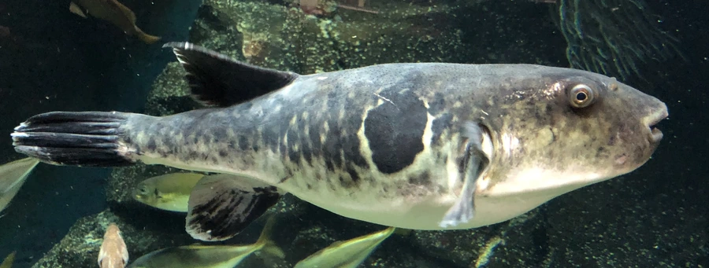

鱼类 · 动物界
红鳍东方鲀 Takifugu rubripes

日本料理中最名贵的河豚，体呈卵圆、体表有小刺，内脏含剧毒的河豚毒素，肌肉却鲜美无比，需持证厨师处理。
- 分类
- 门脊索动物门纲硬骨鱼纲目鲀形目科鲀科属东方鲀属
- 栖息环境
- 近海底层水域，栖息于沙泥底质、水深 10–100 m 的沿岸海域
- 地理分布
- 日本、朝鲜半岛及中国黄海、渤海、东海的近岸海域
- 保护级别
- 暂无评估；中国未列入国家重点保护野生动物名录（养殖与加工受专门管理）
物种志
红鳍东方鲀体呈卵圆形，头宽、吻短，口小，上下颌的牙齿愈合成为喙状齿板，能咬碎贝壳。体表密布小刺，背鳍和臀鳍相对而生，没有腹鳍，尾鳍截形。体色背部灰黑或黑褐色，散布浅色小点，腹部白色。成鱼体长一般 30–50 cm，体重 1–3 kg，最大个体可超过 5 kg。
红鳍东方鲀是近海肉食性鱼类，以贝类、甲壳类和小鱼为食，分布于日本、朝鲜半岛和中国黄海、渤海、东海的沿岸水域。它的肝脏、卵巢、血液和皮肤含有剧毒的河豚毒素，这种神经毒素毒性极强、耐热，普通烹调无法破坏，只有肌肉无毒，因此处理河豚必须由受过专门训练并取得资质的厨师操作。繁殖期在春季，雌鱼在沿岸浅水区产卵。日本和中国的养殖与加工产业规模很大，其基因组只有约 4 亿个碱基对，是脊椎动物中最小的基因组之一，常被用作模式生物。目前它没有IUCN 的正式评估。
形态与习性
- 食性肉食性，以贝类、甲壳类和小鱼为食，用喙状齿板咬碎贝壳
- 体长一般 30–50 cm，最大可超过 70 cm
- 体重常见 1–3 kg，最大可超过 5 kg
- 毒素肝脏、卵巢、血液和皮肤含河豚毒素，肌肉无毒
- 繁殖春季在沿岸浅水区产卵
- 栖息深度水深 10–100 m 的沙泥底质海域
趣味知识
- 河豚毒素是神经毒素，毒性比氰化钠强约 1000 倍，加热也无法破坏。
- 红鳍东方鲀的基因组只有约 4 亿个碱基对，是脊椎动物中最小的基因组之一。
- 中国从 2016 年起有条件开放养殖红鳍东方鲀和暗纹东方鲀的加工经营。